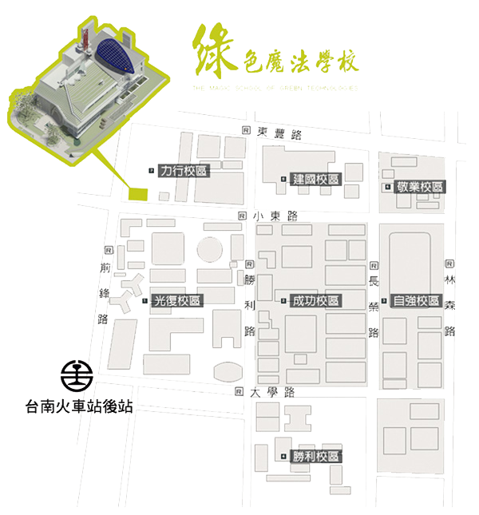

- 南下：
沿國道一號南下 → 下永康交流道右轉 → 沿中正北路、中正南路(南向)往台南市區直行 → 中華路左轉 → 沿中華東路前進 → 於小東路口右轉，直走即可抵達本校。
【自國道三號南下者，轉國道8號（西向），可接國道一號（南向）】
-
北上：
沿國道一號北上 → 下仁德交流道左轉 → 沿東門路(西向)往台南市區直走 → 遇林森路或長榮路右轉(北向)，即可抵達本校。
【自國道三號北上者，轉86號快速道路（西向），可接國道一號（北向）】
- 於台南站下車後，自後站出口（大學路），大學路左側即為本校光復校區。
-
搭乘台灣高鐵抵台南站者，可至高鐵台南站二樓轉乘通廊或一樓大廳1號出口前往台鐵沙崙站搭乘台鐵區間車前往台南火車站，約30分鐘一班車，20分鐘可到達台南火車站。
於台南站下車後，自後站出口（大學路），大學路左側即為本校光復校區。
- 9/8專車接駁至會場：乘車處高鐵1樓大廳2號出口處，發車時間上午10：00。
- 高鐵時刻表
- 高鐵1F平面圖
- 台灣高鐵轉乘服務資訊
- 高鐵轉乘沙崙支線時刻表

- 行旅客房（單人房）： 1間 2,600元
- 精緻客房（雙人房）： 1間 3,200元
- 老爺行旅行銷業務部林慧姿副理
06-2366168
tanya.lin@tn.hotelroyal.com.tw
- 請於 8/31 前填寫「訂房單」及「付款單」，傳真至老爺行旅行銷業務部林慧姿副理（傳真：06-2386286），即可完成訂房。
- 老爺行旅訂房單
- 老爺行旅付款單
- 請於 9/7 前電洽老爺行旅行銷業務部林慧姿副理（電話：06-2366168），9/8 退房將被扣訂金。
 搭乘高鐵
搭乘高鐵